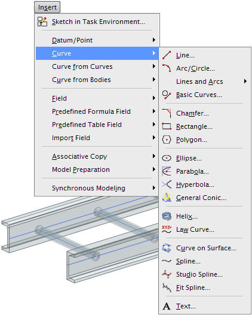

可以在 FEM 文件中的多边形边上创建1D 网格，但是在大多数情况下，在主模型或理想化部件文件中创建关联点或曲线会更好，这能更好地定义节点位置和梁位置。
部件文件显示时，高级仿真中提供了很多曲线创建命令，一些有用的命令包括：
插入→基准/点→点：使用点命令来定义端点和节点位置
插入→曲线→直线：使用直线命令来连接捕捉的点或者现有点
插入→来自曲线集的曲线→投影曲线：使用投影曲线来把曲线或点投影到邻近的几何体(比如中面)上
